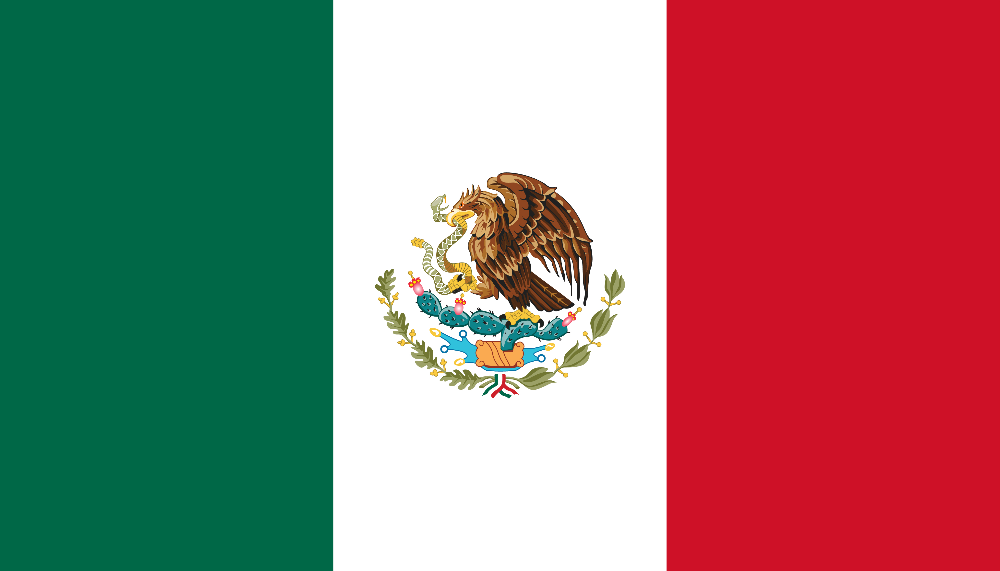México, oficialmente los Estados Unidos Mexicanos, es un país soberano ubicado en la parte meridional de América del Norte; su capital y ciudad más poblada es la Ciudad de México.
El territorio mexicano tiene una superficie de 1 964 375 km², por lo que es el decimotercer país más extenso del mundo y el tercero más grande de América Latina. Limita al norte con los Estados Unidos de América a lo largo de una frontera de 3155 km, mientras que al sur tiene una frontera de 958 km con Guatemala y 276 km con Belice. Las costas del país limitan al oeste con el océano Pacífico y al este con el golfo de México y el mar Caribe, sumando 9330 km de litoral.
México es el décimo país más poblado del mundo, con una población estimada en más de 130 millones de personas en 2021. La mayoría de ellas tiene como lengua materna el español, al que el estado reconoce como lengua nacional junto a 68 lenguas indígenas propias del país, si bien en el país se hablan alrededor de 287 variedades lingüísticas. Estas cifras convierten a México en el país con mayor número de hispanohablantes, así como en el séptimo país con mayor diversidad lingüística en el mundo.
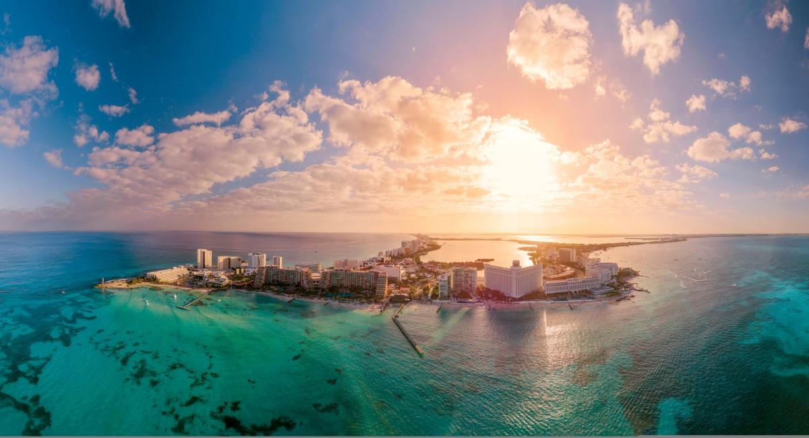Con sus playas de fina arena blanca, aguas azul turquesa y espectaculares arrecifes de coral que yacen frente a sus costas, no es ninguna sorpresa que Cancún sea uno de los destinos turísticos más populares de México.
Aquí puedes difrutar de hasta 10 playas difentes, algunas de las más bonitas son: playa Gaviota Azul y playa Delfines. Cancún cuenta con una gran oferta de actividades que lo convierten en un paraíso para los amantes de la naturaleza y la aventura. Bucea o haz snorkel en los místicos cenotes que se ubican a sus alrededores,date un baño con los delfines; disfruta del mar practicando kayak o manejando una moto acuática. Este destino también es el lugar perfecto para relajarse en un spa o para pasar el día en un campo de golf, admirando las hermosas vistas mientras perfeccionas tus tiros. Los que están en busca de cultura pueden visitar el Museo Maya de Cancún, que resguarda una de las colecciones arqueológicas de la cultura maya más significativas del país. Asegúrate de visitar las zonas arqueológicas que se ubican en los alrededores de la ciudad, como El Meco, El Rey, San Miguelito, Tulum, Cobá, Muyil, entre otras.
Uno de los mejores hoteles de Cancún es, sin duda, el hotel Meliá. Un hotel de lujo con todo incluido. La espectacular arquitectura, las influencias de la cultura maya y la espectacular atención al detalle y los servicios exclusivos son diferentes a todo lo que hayas experimentado. Las impresionantes ventanas de vidrio aseguran que tu suite esté bañada por la luz natural del Caribe. Descubre el máximo bienestar en dos fabulosos spas así como todas las posibilidades de Cancún desde este alojamiento rico en tradición, lujo y diversión.
Hotel Meliá Cancún
Se encuentra en las costas del pacífico mexicano, en el estado de guerrero,
donde forma parte del famoso
triángulo del sol junto al binomio Ixtapa - Zihuatanejo y Taxco. La ubicación de este destino a sólo 379 km de
la ciudad de México, te permite acceder a él en camión (autobús) o auto, en un viaje que dura aproximadamente 5
horas o si prefieres un vuelo, sólo te tomará una hora; cuenta con un aeropuerto que recibe vuelos nacionales e
internacionales, de los destinos más diversos, ya sean directos o con conexión, un buen dato para considerar a
la hora de planear tu viaje.
Dependiendo del oleaje, las playas de Acapulco ofrecen diferentes amenidades. En la Zona Dorada de la Costera Miguel Alemán se encuentra Playa La Condesa, juvenil y perfecta para practicar deportes como esquí, jetsky y salto en bungy. Cerca está Playa Icacos, la más extensa de Acapulco, donde se encuentra el parque acuático CiCi. Para quienes buscan relajarse, Playas Hornos y Hornitos (frente al Parque Papagayo) son ideales; mientras que en Pie de la Cuesta podrás relajarte en una hamaca a admirar atardeceres. Si lo que buscas son buenas olas para surfear, entonces dirígete a Revolcadero (en Barra Vieja), mientras que Puerto Marqués es tranquilo y cuenta con excelentes restaurantes.
Podrás practicar una amplia cantidad de deportes acuáticos como jetsky, esquí, paracaídas, entre otros. También hay opciones para los más aventureros como el Paramotor (vuela sobre el mar), el buceo, el kitesurf, el bungy, motos de agua y algunos deportes terrestres. Para quienes gustan del golf, Acapulco posee magníficos campos que brindan exclusividad y bellos paisajes. Una actividad también para los más atrevidos es La tirolesa, de nombre Xtasea, que tiene una extensión de 1800 metros, de los cuales 700 son sobre el agua, por lo que es la más larga del mundo sobre el mar (a tan solo 100m de altura y unos 120km/h).
Hotel Princess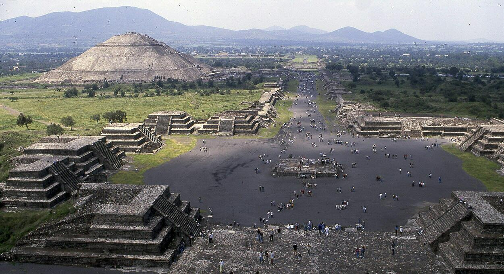 Teotihuacán, la «ciudad de los dioses» en náhutl, es uno de los destinos más conocidos de México, y el yacimiento precolombino más visitado, ubicada en un nudo de comunicación excelente que conectaba la costa veracruzana con el valle donde se asienta esta gigantesca explanada urbana, la más importante de Mesoamérica.
Gran parte de la información que se tiene acerca de Teotihuacán proviene curiosamente de los mexicas o aztecas que le dieron el hombre de «Ciudad de los Dioses o Lugar donde se hicieron los dioses» cuando ocuparon la zona y asistieron al inmenso esfuerzo que había requerido crear la ciudad. Este Patrimonio de la Humanidad por la Unesco desde 1987 vivió su punto culmen entre el 250 y 500 d.C., con una población que pudo alcanzar los 150 mil habitantes en un entramado urbano que pudo llegar a los 20 km cuadrados (el recinto arqueológico que visitamos actualmente cuenta con sólo 2 km cuadrados). Si quieres una visión única de Teotihuacán te recomendamos un paseo en globo que te eleva desde la población cercana de San Francisco Mazapa para ver las pirámides desde lo más alto y obtener fotografías de todo el complejo.
En la ciudad de México podemos encontrar muchos sitios para poder visitar. En este caso, pondremos lagunos ejemplos de sitios o tours qu se podrían hacer. Además, puedes ver algunos sitios para comer que no te decepcionarán.
Restaurante giratorio World Trade Center. Este restaurante cuenta con un Récord Guinness.
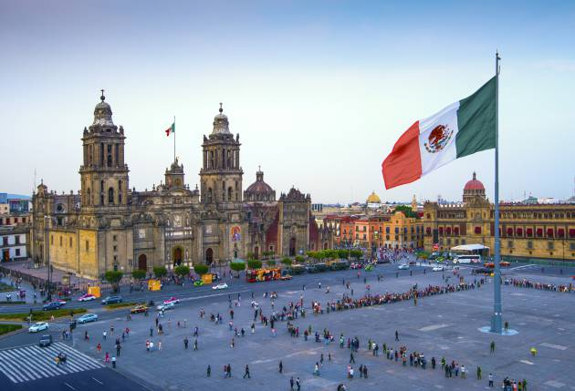 La plaza de la Constitución, informalmente conocida como el Zócalo, es la plaza principal de la Ciudad de México. Junto con las calles aledañas, ocupa una superficie casi rectangular de aproximadamente 46 800 m² (195 m x 240 m). Se le denominó así en honor a la Constitución de Cádiz promulgada en 1812. Esta es la segunda plaza más grande del mundo y la primera entre los países de habla hispana.
El Zócalo está localizado en el corazón de la zona conocida como centro histórico de la Ciudad de México, en la demarcación Cuauhtémoc. Su localización fue escogida por los conquistadores españoles para ser establecida justo a un lateral de lo que anteriormente era el centro político y religioso de México-Tenochtitlan, capital de los mexicas.El Zócalo está localizado en el corazón de la zona conocida como centro histórico de la Ciudad de México, en la demarcación Cuauhtémoc. Su localización fue escogida por los conquistadores españoles para ser establecida justo a un lateral de lo que anteriormente era el centro político y religioso de México-Tenochtitlan, capital de los mexicas.
Está rodeado por la Catedral Metropolitana de la Ciudad de México al norte, el Palacio Nacional (sede del Poder Ejecutivo Federal) al este, el Antiguo Palacio del Ayuntamiento y el Edificio de Gobierno (réplica del anterior, ambos del Gobierno de Ciudad de México sede del Poder Ejecutivo local) al sur, y al oeste por edificios comerciales (como el Portal de Mercaderes), administrativos y hoteles. En la esquina noreste de la plaza se encuentran el Museo del Templo Mayor y la plaza Manuel Gamio, así como la estación Zócalo de la Línea 2 del Metro.
Desde la época mesoamericana, ha sido sede de hechos importantes en las diversas etapas de la historia de México, así como sitio de concentración y de manifestaciones sociales y culturales. Durante cinco siglos de historia, ha sufrido cambios en los elementos y edificios que le rodean y le constituyen; fueron instalados y removidos en numerosas veces jardines, monumentos, circos, mercados, rutas de tranvías, fuentes y otros ornamentos. La fisonomía actual data de 1958.
El Zócalo más allá de ser la sede del poder político, económico y religioso de México, así como de ser un espacio donde se mezclan el pasado indígena y virreinal, con casi cinco siglos de historia, es también el lugar donde el pueblo de México se reúne para celebrar fiestas o manifestaciones, y han ocurrido hechos históricos de importancia. En el virreinato se realizaron proclamaciones de virreyes o sublevaciones como el Motín de 1692; la plaza fue el punto de encuentro en la entrada triunfal del Ejército Trigarante que consumó la independencia en 1821; en la época independiente se realizaron celebraciones del Día de la Independencia; el espacio fue tomado por los ejércitos de Estados Unidos en 1847 y Francia en 1863. El siglo xx presenció hechos como la celebración del centenario de la independencia en 1910, la toma de la plaza dentro de la Decena Trágica, múltiples manifestaciones políticas, celebraciones de asunciones presidenciales, eventos anuales multitudinarios como el Grito de Dolores y los desfiles conmemorativos de la independencia de México, la Revolución mexicana y el Día del Trabajo, así como hechos relevantes del movimiento estudiantil de 1968.
A partir de 1997, la plaza dio paso a un mayor número de celebraciones populares de tipo cultural, deportivo y de entretenimiento, principalmente conciertos masivos. Sin embargo, en el siglo xxi sigue siendo escenario de las mencionadas festividades y manifestaciones sociales. En 2010 fue el escenario principal de los festejos del bicentenario del inicio de la independencia y once años más tarde, en 2021, del bicentenario de la consumación de la misma. La plaza, al ser parte del centro histórico, está considerada como Patrimonio Cultural de la Humanidad desde 1987.
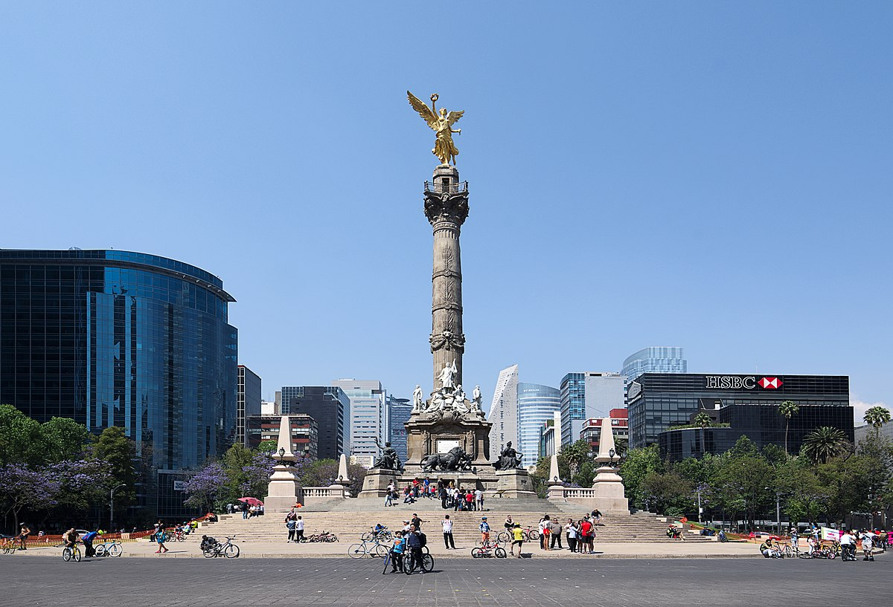 El Monumento a la Independencia o Columna de la Independencia (coloquialmente, El Ángel o El Ángel de la Independencia) es una columna honoraria que se encuentra en la Ciudad de México, en la glorieta localizada en la confluencia de la avenida Paseo de la Reforma y las calles Río Tíber y Florencia. La inauguró en 1910 el entonces presidente de México, Porfirio Díaz, para conmemorar el Centenario del inicio de la guerra de independencia de ese país. En años posteriores se convirtió en un mausoleo para los héroes más importantes de esa guerra. Es uno de los monumentos más emblemáticos de la urbe y usado actualmente como un icono cultural de la Ciudad de México y lugar de festejos y manifestaciones nacionales. Realizado como una columna honoraria rematada con una estatua de la Victoria Alada sosteniendo una corona de laurel y una cadena rota de tres eslabones, se levanta a su vez sobre un pedestal escalonado completado por diferentes estatuas e inscripciones alegóricas a la independencia de México.
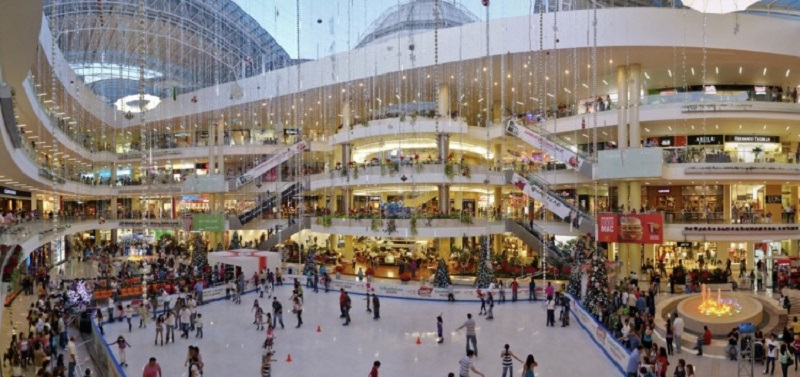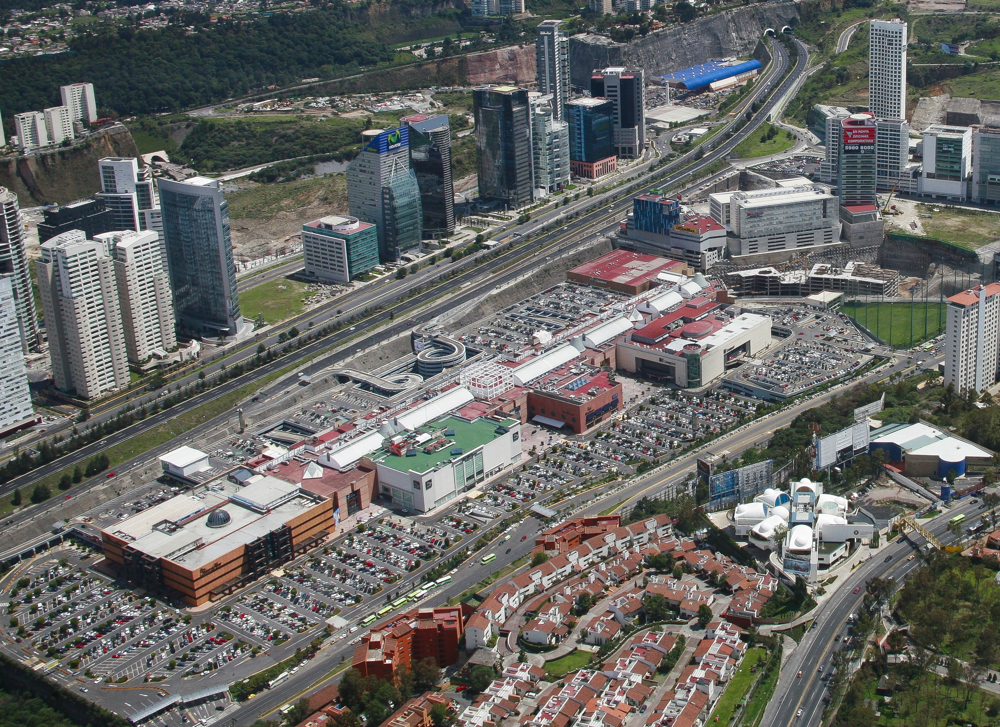
El centro comercial de Santa Fe es el más grande y completo de México, el primero más grande de Latinoamérica y
uno de los 30 más grandes del mundo, cuenta con seis niveles, su edificación alcanza los 600 501 m² de los
cuales, 260 367 m² son espacios rentables que sirven como escaparate comercial a marcas de talla internacional
como: Dolce&Gabanna, Emporio Armani, Ermenegildo Zegna, Salvatore Ferragamo, entre otras.
Fue inaugurado el 19 de noviembre de 1993 y cuenta con más de 500 locales, estacionamiento para más de 7000
autos y una pista de hielo. Un sitio impresionante donde pasar todo el día.
Dejo el enlace para que podáis echarle un ojo a las tiendas.
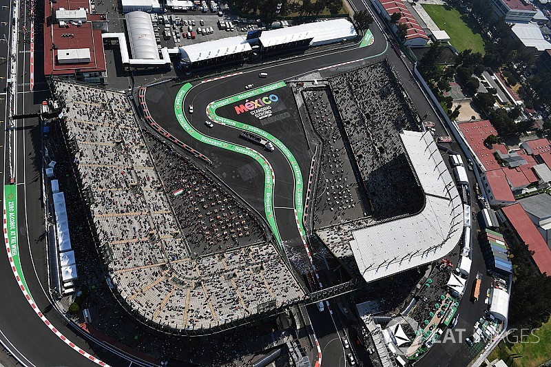 El Autódromo Hermanos Rodríguez es un autódromo ubicado en el macro complejo deportivo Ciudad Deportiva Magdalena Mixhuca, en el oriente de la Ciudad de México, México cerca del centro de la misma y a un par de kilómetros del aeropuerto. El circuito está ubicado dentro del parque público de la Ciudad Deportiva Magdalena Mixhuca en el sureste de la Ciudad de México. Fue construido en 1959 y es propiedad del Gobierno de Ciudad de México, operado bajo concesión por la Corporación Interamericana de Entretenimiento, a través de su subsidiaria OCESA Entretenimiento, una de las filiales de CIE. CIE también organiza las carreras NASCAR y Desafío Corona en este circuito y alquila los circuitos a otras partes, incluidos organizadores de carreras, clubes de automóviles y aficionados de pista por tarifas que son controvertidas debido a sus montos desproporcionadamente altos en comparación con otros cursos ex-Fórmula 1.
El circuito del Gran Premio se sometió a una importante renovación bajo la dirección de Hermann Tilke para el regreso de la Fórmula 1 en 2015. Se reconstruyó la pista completamente, se edificaron un hospital, una nueva zona de pits, un hospitality, una zona VIP y un complejo de gradas con capacidad para más de 120 mil personas.
Algunas de las fechas más significativas para visitar el país, fuera de veranear a las playas, son tales como:
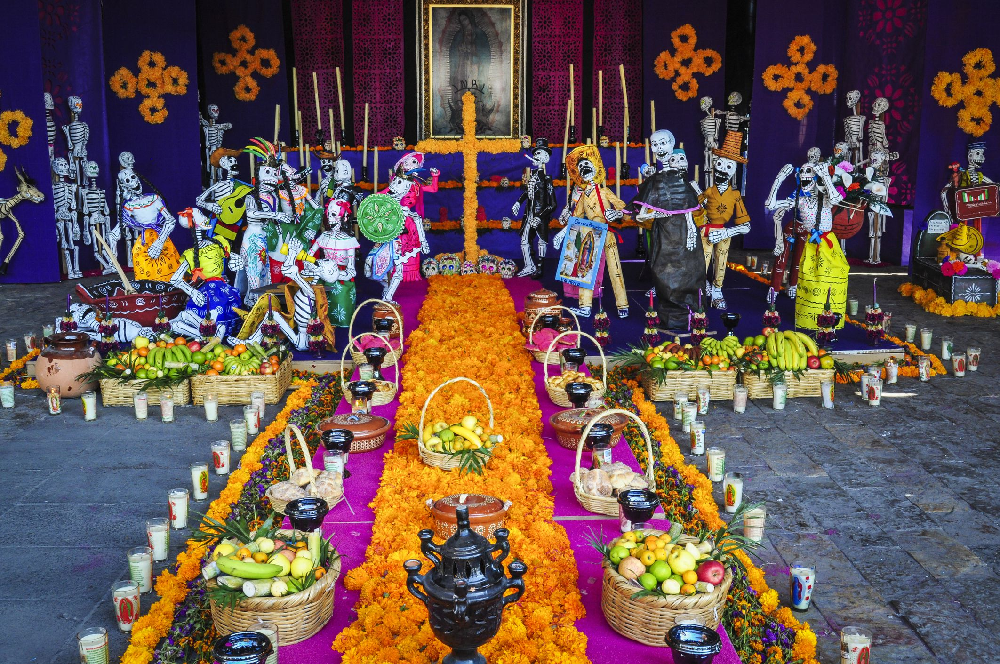 El Día de Muertos es una tradición mexicana celebrada el 1 y 2 de noviembre en la que se honra la memoria de los muertos. Se originó como un sincretismo entre las celebraciones católicas (especialmente el Día de los Fieles Difuntos y de Todos los Santos) así como las diversas costumbres de los indígenas de México. Se lo suele asociar comúnmente con otras celebraciones como el Día de Brujas o Halloween, aunque en realidad difiere mucho de esta.
Una recomendación para esta esta fecha es un itinerario para disfrutar de diferentes ciudades con este ambiente que no te arrepentirás.
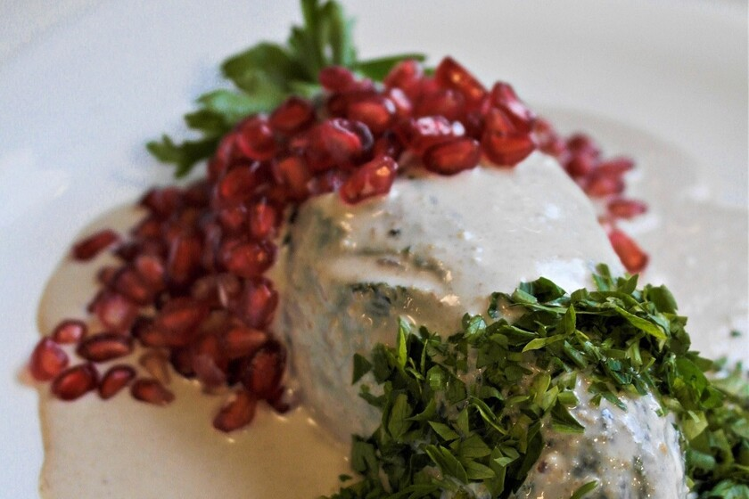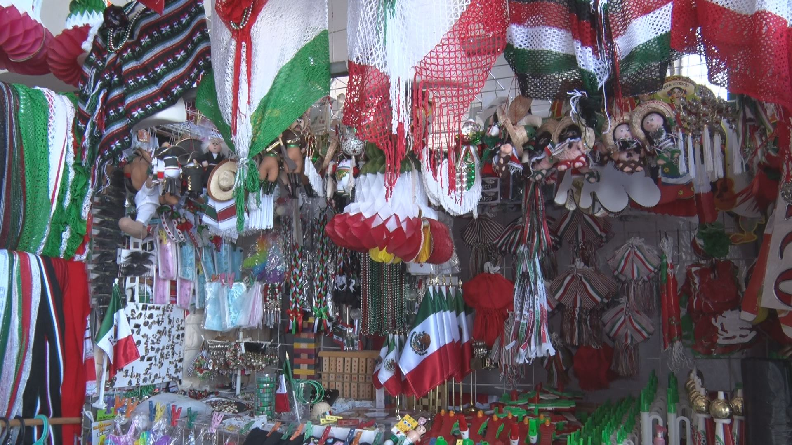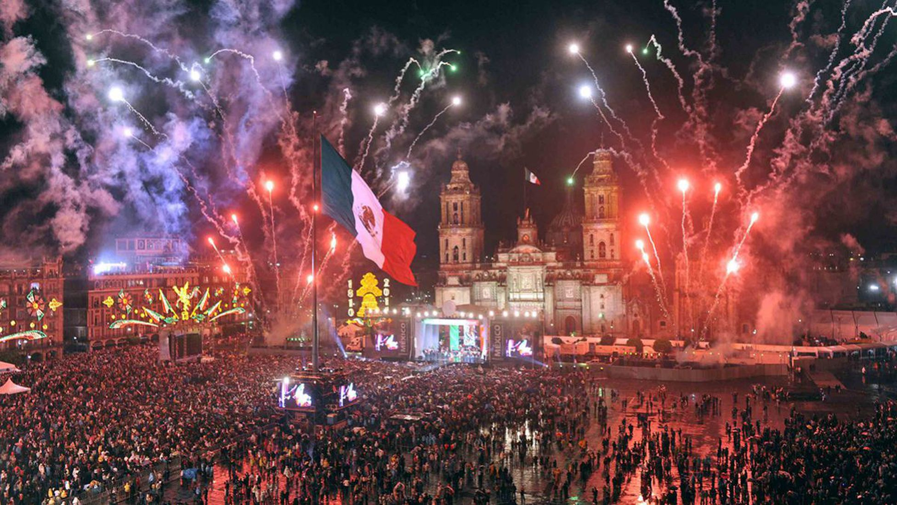 ¿Por qué
septiembre es
el mes patrio en México?
Septiembre es un mes especial marcado en el calendario de todos los ciudadanos mexicanos como 'el mes patrio',
debido a que a lo largo de los años infinidad de hechos importantes para la historia del país han tenido lugar
durante sus 30 días.
En el ámbito histórico y cultural los días más emotivos para México son el 15 y 16 de septiembre, ya que durante
esos días en 1821 se producía el Grito de Dolores, que representó la declaración de independencia del país tras
más de 300 años bajo el dominio colono español.
Por otro lado, en el ámbito político, el día 2 tiene lugar el Día del Informe Presidencial, en el que el
presidente informa a todos los ciudadanos sobre la situación del país y el curso político del momento. Este
hecho se celebra desde el año 1917, cuando uno de los líderes de la Revolución Mexicana, Venustiano Carranza,
instauró tal tradición.
Muchos de los platillos más representativos de la gastronomía mexicana contienen ingredientes que guardan un
estrecho lazo con las raíces tradicionales de las culturas originarias de México, y que se encuentran con mayor
disponibilidad en estos meses, tales como el pozole, mole, chiles en nogada, elotes, tamales, tacos y antojitos
como quesadillas, sopes o gorditas, son algunos de los protagonistas en las festividades patrias que llenan de
colorido y sabor las mesas mexicanas.